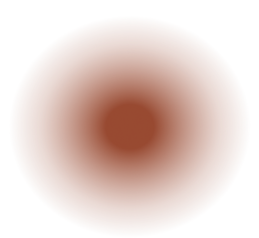
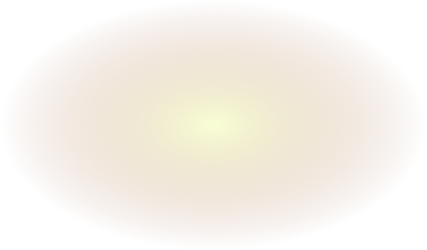

To the left
and the right of the hallway
There are two
very small closets
In the first, one may sleep standing up
;in the other, satisfy one's fecal necessities.
also through here passes a spiral stairway,

which sinks abysmally
passes a spiral staircase

and soars upward to remote distances